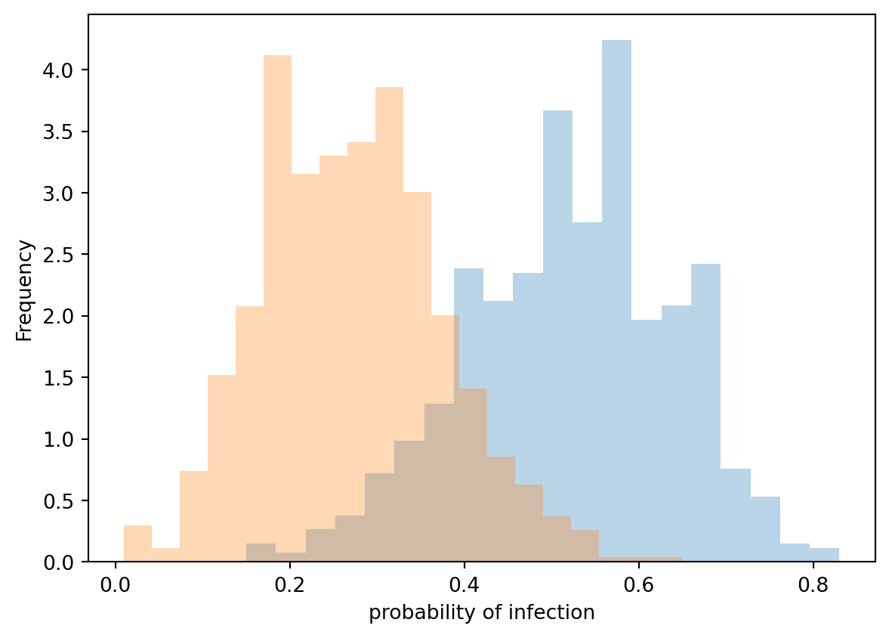
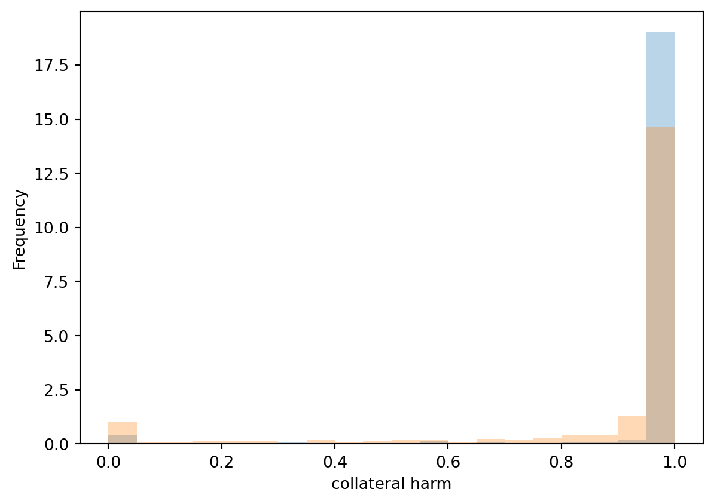

import globfrom exps import*import numpyimport matplotlib.pyplot as pltdef degrees(network): essential =list(len(l) for l in network[:1000]) rest =list(len(l) for l in network[1000:])return [essential, rest]essential = []rest = []files = glob.glob(f'../data/graphs/experiment_essential_workers_2_sbm/run_1/twocommunities_edgelist.txt')for f in files: n = read_graph(f) [this_essential, this_rest] = degrees(n) essential.extend(this_essential) rest.extend(this_rest)plt.figure()hist(essential, label="Essential worker community")hist(rest, label="Rest")plt.legend()plt.xlabel("Node degree")plt.ylabel("Frequency")plt.show()def figure_1(params, xlabel): c1, c2 = split_result_by_communities(params["ic_result"], params)print("Community means: %s, %s"% (numpy.mean(c1), numpy.mean(c2))) hist(c1) hist(c2) plt.xlabel(xlabel) plt.ylabel("Frequency")def delete_nodes_from_network(network, nodes_to_delete): network = read_graph(network) edge_list = graph_to_edge_list(network)for n in nodes_to_delete: network[n] = [] network =list(list(e for e in l if e notin nodes_to_delete)for l in network) n = temp_name(".txt") write_graph(network, n)return n
Community means: 0.6713476070528966, 0.45294710327455917

multiple non-essential communities
With this, we attempt to keep average degrees consistent across the experiments, but now there are four non-essential worker communities, and one essential worker community. The community sizes are 400 each.
Community means: 0.9718006430868168, 0.8780201082753288

3a, SBM-based
This is not exactly comparable because since the overall sizes changed, there are now fewer essential workers, so to make vaccination rate difference match the degree difference, we need to change the parameters.
We arrive at \(s_1\), \(s_2\) by solving the system \(s_1 = s_2 \times 1.5\), \(400 s_1 + 1600 s_2 = 200\).